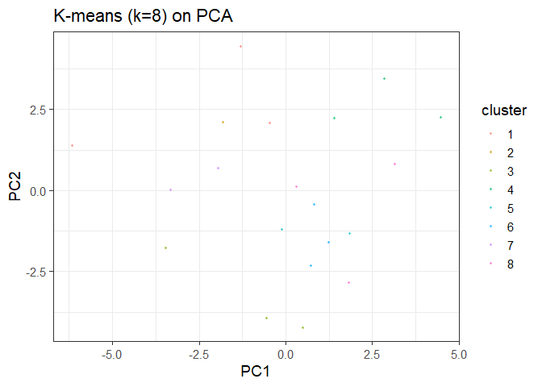

The goal of analysiskmeans is to perform a K Means Clustering on a Single Cell Experiment data object!
Installation
You can install the development version of analysiskmeans from GitHub with:
# install.packages("pak")
pak::pak("nsmodi/analysiskmeans")Or you can also …
# library(devtools)
# remotes::install_github("nsmodi/analysiskmeans")Example: data_config()
This is a basic example of how to use the data_config function to set up your SingleCellExperiment data so that it is usable for functionality in this package!
library(analysiskmeans)
utils::data(example_sce, package="analysiskmeans")
sce <- example_sce
results <- data_config(sce)
sce <- results$sceExample: top_x_genes()
Next, we can take a look creating a subset of our data including a particular number of top selected genes! Keep in mind that if you do not fill in a parameter value for n_top, 50 will be the default value. A small portion of this subset is shown below.
utils::data(example_sce, package="analysiskmeans")
sce <- example_sce
results <- data_config(sce)
sce <- results$sce
mat_norm <- top_x_genes(sce, n_top = 50)
mat_norm[1:5,1:5]Example: computepca()
We can now compute a PCA analysis as a part of doing Kmeans. Within this, we will need to pass the mat_norm object we just created into the computepca() function. A few outputs of the pca function are shown below.
utils::data(example_sce, package="analysiskmeans")
sce1 <- example_sce
results1 <- data_config(sce1)
sce1 <- results1$sce
mat_norm1 <- top_x_genes(sce1, n_top = 50)
pca1 <- computepca(mat_norm1)
pca1$sdev[1:5]Example: kmeans()
The kmeans function conducts clustering in an iterative fashion, going from inputted parameters of minimum k values to maximum k values. The km_list object contains a large amount of information about the clustering. The metrics object contains wss and average silhouette scores with corresponding to each k value in our range. An example of what metrics looks like is shown below.
utils::data(example_sce, package="analysiskmeans")
sce <- example_sce
results <- data_config(sce)
sce <- results$sce
mat_norm <- top_x_genes(sce, n_top = 50)
pca <- computepca(mat_norm)
max_k <- 10
min_k <-5
outputs <- k_means(min_k = min_k, max_k=max_k, pca = pca)
metrics<-outputs$metrics
km_list <- outputs$km_list
metricsExample: cluster_plot()
Our cluster_plot() function takes outputs from the kmeans function and plots the data based on principal components. An example plot is shown above, and each cluster is differentiated by color. We plot the following based on an example selected k value. In this case we have chosen a value of 8 as an example.
plot <- cluster_plot(selected_k=8, km_list, pca, results$cell_type)